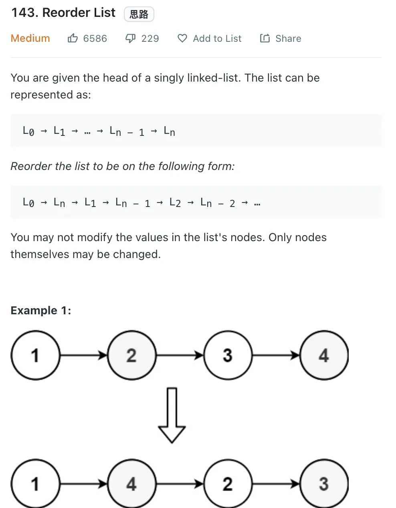
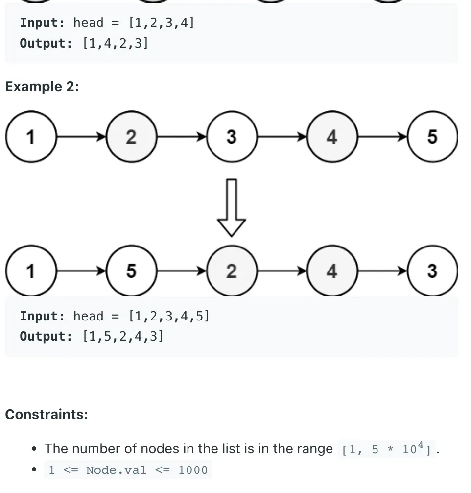

143. Reorder List
考過的公司：Amazon
Question


✍🏽 My Solution
Runtime: 2 ms, faster than 77.72% of Java online submissions for Reorder List.
Memory Usage: 54.4 MB, less than 29.98% of Java online submissions for Reorder List.
class Solution {
public void reorderList(ListNode head) {
// findmid
ListNode mid = findMid(head);
// cut
ListNode midNext = mid.next;
mid.next = null;
// reverse
ListNode rightHead = reverse(midNext);
// link
// 1 -> 2 -> 4 -> 3
// 1 -> 2 3 -> 4
ListNode cur = head;
while (rightHead != null) {
ListNode tmp = rightHead.next;
rightHead.next = cur.next;
cur.next = rightHead;
cur = rightHead.next;
rightHead = tmp;
}
}
private ListNode findMid(ListNode head) {
ListNode fast = head;
ListNode slow = head;
while (fast.next != null && fast.next.next != null) {
fast = fast.next.next;
slow = slow.next;
}
return slow;
}
private ListNode reverse(ListNode head) {
ListNode prev = null;
ListNode cur = head;
while (cur != null) {
ListNode tmp = cur.next;
cur.next = prev;
prev = cur;
cur = tmp;
}
return prev;
}
}
Solution #1 [technique]
Runtime: 2 ms, faster than 76.04% of Java online submissions for Reorder List.
Memory Usage: 53.7 MB, less than 69.16% of Java online submissions for Reorder List.
class Solution {
public void reorderList(ListNode head) {
ListNode fast = head;
ListNode slow = head;
// Find the middle node
while (fast.next != null && fast.next.next != null) {
slow = slow.next;
fast = fast.next.next;
}
// Reverse the second half
ListNode rightHead = reverse(slow.next);
slow.next = null;
// 链表节点依次连接
while (rightHead != null) {
ListNode tmp = rightHead.next;
rightHead.next = head.next;
head.next = rightHead;
head = rightHead.next; // 這裡注意要指到next，因為 rightHead 的位置已經放好了
rightHead = tmp;
}
}
private ListNode reverse(ListNode head) {
ListNode prev = null;
ListNode cur = head;
while (cur != null) {
ListNode tmp = cur.next;
cur.next = prev;
prev = cur;
cur = tmp;
}
return prev;
}
}
Explanation (in my words)
- How does their solution work?
- 步驟
1 -> 2 -> 3 -> 4 -> 5 -> 6
第一步，将链表平均分成两半
1 -> 2 -> 3
4 -> 5 -> 6
第二步，将第二个链表逆序
1 -> 2 -> 3
6 -> 5 -> 4
第三步，依次连接两个链表
1 -> 6 -> 2 -> 5 -> 3 -> 4